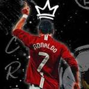

Sobre o Atleta
Cristiano Ronaldo dos Santos Aveiro é um dos maiores jogadores de futebol de todos os tempos. Conhecido mundialmente como CR7, ele se destaca pela dedicação extrema, velocidade, força física, habilidade e capacidade finalizadora.
Nascido em 5 de fevereiro de 1985, na cidade do Funchal, na Ilha da Madeira, Portugal, Cristiano Ronaldo começou sua trajetória no futebol desde muito jovem e conquistou o mundo com seu talento e determinação.
Durante sua carreira, conquistou cinco Bolas de Ouro, cinco títulos da Liga dos Campeões da UEFA e diversos campeonatos nacionais. Também liderou Portugal na conquista da Eurocopa de 2016 e da Liga das Nações de 2019.

Cristiano Ronaldo
Atacante — Al-Nassr / Seleção Portuguesa
Um dos maiores artilheiros da história do futebol, conhecido por sua mentalidade vencedora.
Infância e Início da Carreira
Cristiano Ronaldo nasceu em uma família humilde na Ilha da Madeira. Desde pequeno, demonstrava grande paixão pelo futebol e sonhava em se tornar um jogador profissional.
Aos 12 anos, mudou-se para Lisboa para integrar as categorias de base do Sporting Clube de Portugal. Essa mudança foi fundamental para o desenvolvimento de sua carreira.
Em 2002, estreou profissionalmente pelo Sporting, chamando a atenção de grandes clubes europeus.
Trajetória nos Clubes
Sporting
Foi no Sporting que Cristiano Ronaldo iniciou sua carreira profissional e demonstrou seu enorme potencial.
Manchester United
Em 2003, foi contratado pelo Manchester United. Sob o comando de Sir Alex Ferguson, evoluiu muito e conquistou sua primeira Bola de Ouro em 2008.
Real Madrid
Em 2009, chegou ao Real Madrid e se tornou uma das maiores lendas do clube. Marcou centenas de gols, conquistou quatro Champions League e vários títulos.
Juventus
Em 2018, transferiu-se para a Juventus, da Itália. Conquistou títulos nacionais e continuou demonstrando seu alto nível de desempenho.
Manchester United — Retorno
Em 2021, retornou ao Manchester United, marcando gols importantes e mostrando sua experiência.
Al-Nassr
Em 2023, chegou ao Al-Nassr, da Arábia Saudita, tornando-se uma das principais estrelas do futebol internacional e ajudando a popularizar o campeonato saudita.
Seleção Portuguesa 🇵🇹
Cristiano Ronaldo é o maior artilheiro da história da Seleção Portuguesa e um dos jogadores com mais partidas internacionais.
- Campeão da Eurocopa de 2016.
- Campeão da Liga das Nações de 2019.
- Capitão e líder da Seleção Portuguesa.
- Participações em diversas Copas do Mundo.
- Recordista de gols internacionais masculinos.
Principais Conquistas
- 5 Bolas de Ouro.
- 5 títulos da Liga dos Campeões da UEFA.
- Campeão da Eurocopa 2016.
- Campeão da Liga das Nações 2019.
- 4 Chuteiras de Ouro europeias.
- Vários títulos nacionais na Inglaterra, Espanha e Itália.
- Centenas de gols em competições oficiais.
Recordes do CR7
- O maior artilheiros da história do futebol.
- Maior artilheiro da história das seleções masculinas.
- Recordista de gols na Liga dos Campeões da UEFA.
- Um dos jogadores com mais partidas internacionais.
- Mais de 950 gols oficiais na carreira.
- Um dos maiores goleadores da história do Real Madrid.
Estilo de Jogo
Cristiano Ronaldo é conhecido por sua incrível capacidade de finalização, impulsão, velocidade e força física. Seu cabeceio é considerado um dos melhores do futebol.
Ele também possui excelente posicionamento dentro da área, chutes potentes e habilidade para decidir partidas importantes.
Curiosidades sobre CR7
- Seu apelido CR7 une suas iniciais e seu número favorito.
- É conhecido por sua disciplina e rotina de treinamento.
- É um dos atletas mais populares do mundo.
- Seu salto e cabeceio são impressionantes.
- Possui uma marca mundialmente conhecida.
- É uma inspiração para milhões de jovens jogadores.
Frase Inspiradora
"Talento sem trabalho não é nada."
Cristiano Ronaldo representa dedicação, disciplina, superação e vontade de vencer.